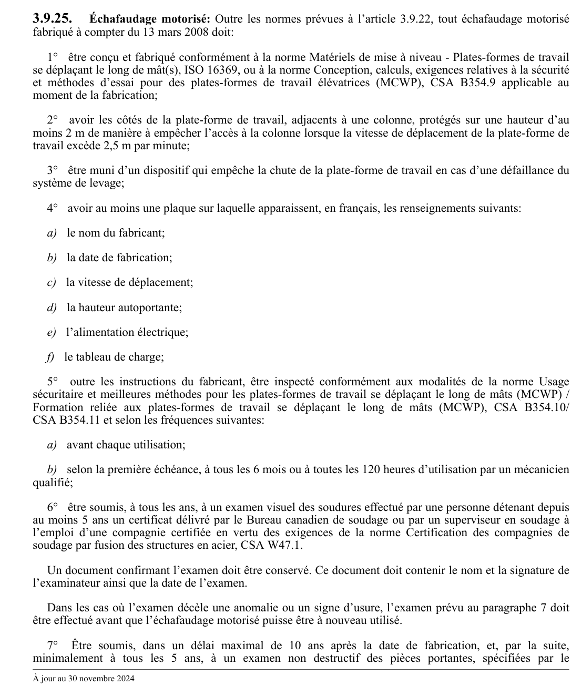

art-3.9.25-CSTC : échafaudage motorisé
Échafaudage motorisé: Outre les normes prévues à l'article 3.9.22, tout échafaudage motorisé fabriqué à compter du 13 mars 2008 doit: 1° être conçu et fabriqué conformément à la norme Matériels de mise à niveau - Plates-formes de travail se déplaçant le long de mât(s), ISO 16369, ou à la norme Conception, calculs, exigences relatives à la sécurité et méthodes d'essai pour...
🌐 LegisQuébec · 📄 PDF officiel
Texte officiel
Échafaudage motorisé: Outre les normes prévues à l’article 3.9.22, tout échafaudage motorisé fabriqué à compter du 13 mars 2008 doit:
1° être conçu et fabriqué conformément à la norme Matériels de mise à niveau - Plates-formes de travail se déplaçant le long de mât(s), ISO 16369, ou à la norme Conception, calculs, exigences relatives à la sécurité et méthodes d’essai pour des plates-formes de travail élévatrices (MCWP), CSA B354.9 applicable au moment de la fabrication;
2° avoir les côtés de la plate-forme de travail, adjacents à une colonne, protégés sur une hauteur d’au moins 2 m de manière à empêcher l’accès à la colonne lorsque la vitesse de déplacement de la plate-forme de travail excède 2,5 m par minute;
3° être muni d’un dispositif qui empêche la chute de la plate-forme de travail en cas d’une défaillance du système de levage;
4° avoir au moins une plaque sur laquelle apparaissent, en français, les renseignements suivants:
a) le nom du fabricant;
b) la date de fabrication;
c) la vitesse de déplacement;
d) la hauteur autoportante;
e) l’alimentation électrique;
f) le tableau de charge;
5° outre les instructions du fabricant, être inspecté conformément aux modalités de la norme Usage sécuritaire et meilleures méthodes pour les plates-formes de travail se déplaçant le long de mâts (MCWP) / Formation reliée aux plates-formes de travail se déplaçant le long de mâts (MCWP), CSA B354.10/ CSA B354.11 et selon les fréquences suivantes:
a) avant chaque utilisation;
b) selon la première échéance, à tous les 6 mois ou à toutes les 120 heures d’utilisation par un mécanicien qualifié;
6° être soumis, à tous les ans, à un examen visuel des soudures effectué par une personne détenant depuis au moins 5 ans un certificat délivré par le Bureau canadien de soudage ou par un superviseur en soudage à l’emploi d’une compagnie certifiée en vertu des exigences de la norme Certification des compagnies de soudage par fusion des structures en acier, CSA W47.1.
Un document confirmant l’examen doit être conservé. Ce document doit contenir le nom et la signature de l’examinateur ainsi que la date de l’examen.
Dans les cas où l’examen décèle une anomalie ou un signe d’usure, l’examen prévu au paragraphe 7 doit être effectué avant que l’échafaudage motorisé puisse être à nouveau utilisé.
7° Être soumis, dans un délai maximal de 10 ans après la date de fabrication, et, par la suite, minimalement à tous les 5 ans, à un examen non destructif des pièces portantes, spécifiées par le manufacturier, conformément aux exigences de la norme Qualification des organismes d’inspection en soudage, CSA W178.1.
La structure doit également être analysée par ultrason.
Un document confirmant l’examen et l’analyse doit être conservé. Ce document doit contenir le nom et la signature de l’examinateur ainsi que la date de l’examen.
De plus, un manuel d’instructions de tout échafaudage motorisé, rédigé en français et complet, doit être mis à la disposition des utilisateurs afin de permettre un usage sécuritaire de l’échafaudage.
Texte de l’article 3.9.25 CSTC, extrait de la couche texte du PDF officiel (page 75), sans OCR ni retouche. La capture ci-dessous et le PDF font foi.
{kind=link}

Toucher l'image pour l'agrandir🔗 CSTC.pdf : page 75 · texte à jour au 30 novembre 2024
📚 Source légale : D. 119-2008, a. 7; D. 483-2021, a. 5. · LégisQuébec
Voir aussi
- art. 3.9.24
- art. 3.9.26
- ⚖️ Loi habilitante : LSST
- ↑ Section 3 : Chantiers de construction
Pages qui pointent ici (3)
- art-3.9.24-CSTC : échafaudage à treuils Recueil législatif
- art-3.9.26-CSTC : échafaudage sur consoles Recueil législatif
- CSTC : Section 3 : Chantiers de construction Recueil législatif